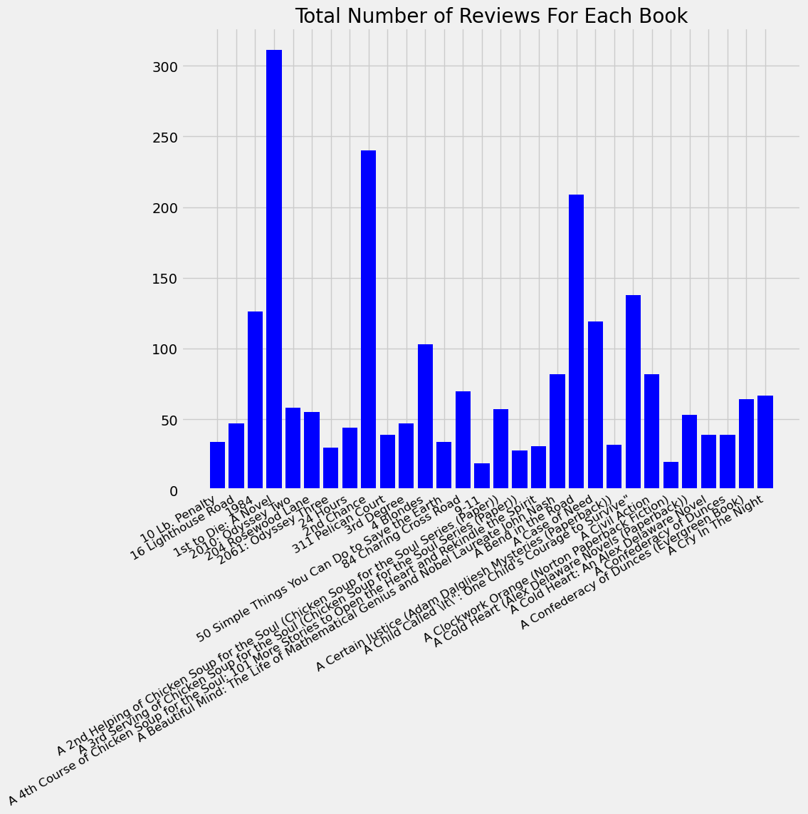
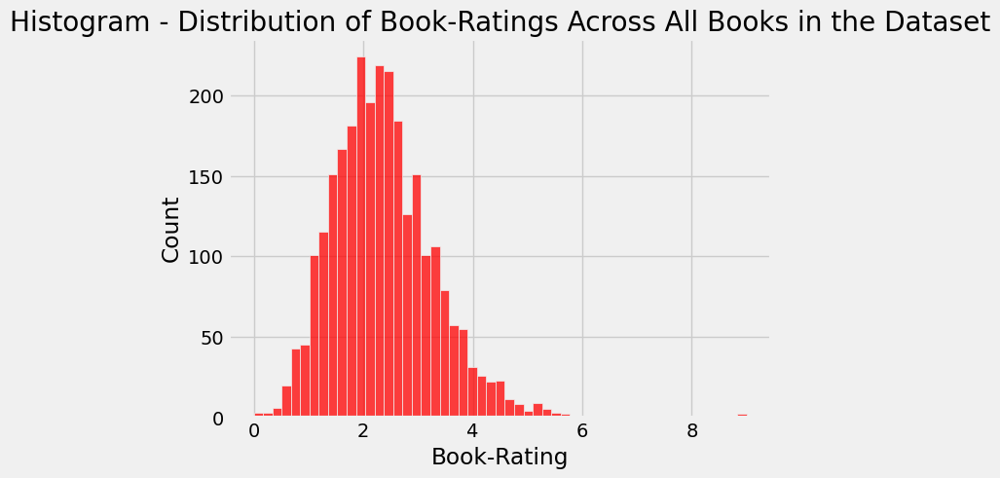
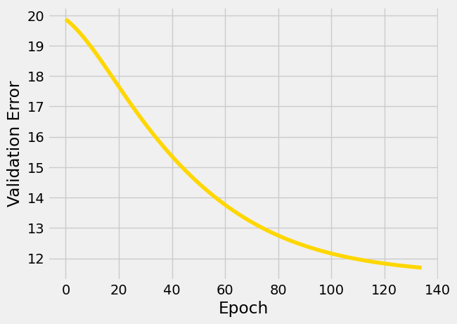
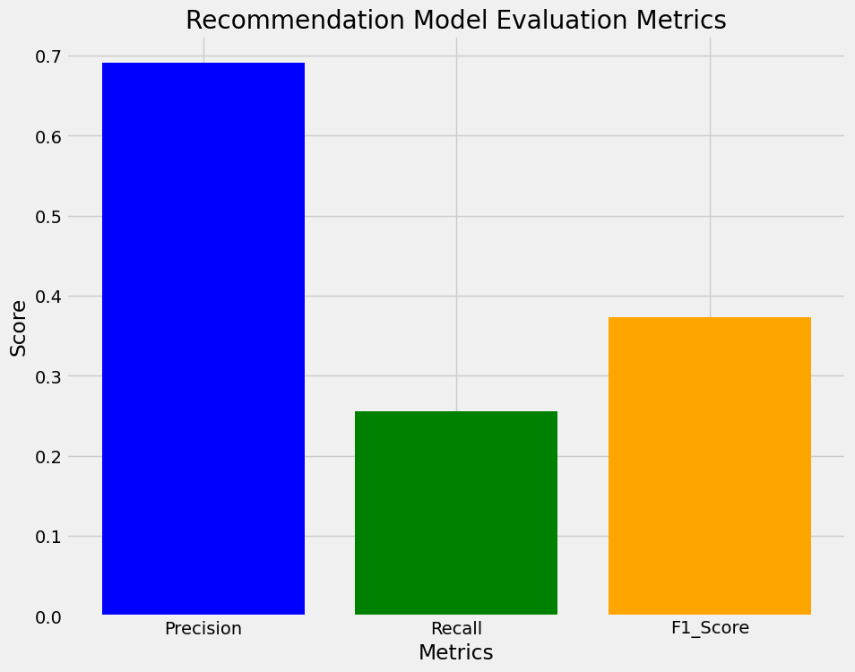
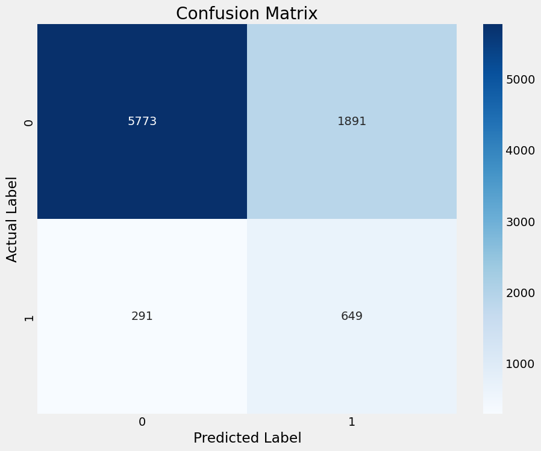

import numpy as np
import pandas as pd
import matplotlib.pyplot as plt
%matplotlib inline
import seaborn as sns
color = sns.color_palette()
from sklearn.model_selection import train_test_split
from sklearn.metrics import average_precision_score, roc_auc_score, precision_recall_fscore_support, confusion_matrix, classification_report
from sklearn.metrics import mean_squared_error, pairwise_distances
from tensorflow.keras.models import Model
from tensorflow.keras.layers import Input, Embedding, Flatten, dot
from tensorflow.keras.optimizers import Adam
plt.style.use("fivethirtyeight")Book Recommender System
Blog Post Inspiration and Objectives
In this blog post, I was hoping to take on the classic beginner/intermediate challenge of creating a simple Machine Learning recommendation system, imitating ones used at Big-Tech companies such as Netflix. Additionally, with so many examples online about Machine Learning movie recommendation systems, I decided to look to establish this system on another area which has always piqued my interest: books. With that said, let’s try to analyze and create this system with some Machine Learning:
Data Preprocessing - Cleaning and Analytics
First, we will read and display all of the initial datasets in our file system for this blog post, downloaded from Kaggle. These datasets contains loads of valuable information such as Book-ISBNS, user-ids for the (anonymous) users/reviewers, book ratings, etc.
# Reading and displaying all of the initial datasets
books_df = pd.read_csv("datasets/Books.csv")
ratings_df = pd.read_csv("datasets/Ratings.csv")
users_df = pd.read_csv("datasets/Users.csv")C:\Users\andre\AppData\Local\Temp\ipykernel_7880\2730945584.py:2: DtypeWarning: Columns (3) have mixed types. Specify dtype option on import or set low_memory=False.
books_df = pd.read_csv("datasets/Books.csv")For clarity on the constraints and parameters of the working datasets, I went to find high-level exploratory statistics on all of the datasets: shape, information about all of the entries, etc.
# Determining the shape of each of the initial datasets
books_df.shape, ratings_df.shape, users_df.shape((271360, 8), (1149780, 3), (278858, 3))# Figuring out all of the columns (and their names) available for me to use in the dataset
books_df.columns, ratings_df.columns, users_df.columns(Index(['ISBN', 'Book-Title', 'Book-Author', 'Year-Of-Publication', 'Publisher',
'Image-URL-S', 'Image-URL-M', 'Image-URL-L'],
dtype='object'),
Index(['User-ID', 'ISBN', 'Book-Rating'], dtype='object'),
Index(['User-ID', 'Location', 'Age'], dtype='object'))# Getting basic information about the all of the datasets
books_df.info(), ratings_df.info(), users_df.info()<class 'pandas.core.frame.DataFrame'>
RangeIndex: 271360 entries, 0 to 271359
Data columns (total 8 columns):
# Column Non-Null Count Dtype
--- ------ -------------- -----
0 ISBN 271360 non-null object
1 Book-Title 271360 non-null object
2 Book-Author 271359 non-null object
3 Year-Of-Publication 271360 non-null object
4 Publisher 271358 non-null object
5 Image-URL-S 271360 non-null object
6 Image-URL-M 271360 non-null object
7 Image-URL-L 271357 non-null object
dtypes: object(8)
memory usage: 16.6+ MB
<class 'pandas.core.frame.DataFrame'>
RangeIndex: 1149780 entries, 0 to 1149779
Data columns (total 3 columns):
# Column Non-Null Count Dtype
--- ------ -------------- -----
0 User-ID 1149780 non-null int64
1 ISBN 1149780 non-null object
2 Book-Rating 1149780 non-null int64
dtypes: int64(2), object(1)
memory usage: 26.3+ MB
<class 'pandas.core.frame.DataFrame'>
RangeIndex: 278858 entries, 0 to 278857
Data columns (total 3 columns):
# Column Non-Null Count Dtype
--- ------ -------------- -----
0 User-ID 278858 non-null int64
1 Location 278858 non-null object
2 Age 168096 non-null float64
dtypes: float64(1), int64(1), object(1)
memory usage: 6.4+ MB(None, None, None)# Seeing each of the dataframes individually
books_df| ISBN | Book-Title | Book-Author | Year-Of-Publication | Publisher | Image-URL-S | Image-URL-M | Image-URL-L | |
|---|---|---|---|---|---|---|---|---|
| 0 | 0195153448 | Classical Mythology | Mark P. O. Morford | 2002 | Oxford University Press | http://images.amazon.com/images/P/0195153448.0... | http://images.amazon.com/images/P/0195153448.0... | http://images.amazon.com/images/P/0195153448.0... |
| 1 | 0002005018 | Clara Callan | Richard Bruce Wright | 2001 | HarperFlamingo Canada | http://images.amazon.com/images/P/0002005018.0... | http://images.amazon.com/images/P/0002005018.0... | http://images.amazon.com/images/P/0002005018.0... |
| 2 | 0060973129 | Decision in Normandy | Carlo D'Este | 1991 | HarperPerennial | http://images.amazon.com/images/P/0060973129.0... | http://images.amazon.com/images/P/0060973129.0... | http://images.amazon.com/images/P/0060973129.0... |
| 3 | 0374157065 | Flu: The Story of the Great Influenza Pandemic... | Gina Bari Kolata | 1999 | Farrar Straus Giroux | http://images.amazon.com/images/P/0374157065.0... | http://images.amazon.com/images/P/0374157065.0... | http://images.amazon.com/images/P/0374157065.0... |
| 4 | 0393045218 | The Mummies of Urumchi | E. J. W. Barber | 1999 | W. W. Norton & Company | http://images.amazon.com/images/P/0393045218.0... | http://images.amazon.com/images/P/0393045218.0... | http://images.amazon.com/images/P/0393045218.0... |
| ... | ... | ... | ... | ... | ... | ... | ... | ... |
| 271355 | 0440400988 | There's a Bat in Bunk Five | Paula Danziger | 1988 | Random House Childrens Pub (Mm) | http://images.amazon.com/images/P/0440400988.0... | http://images.amazon.com/images/P/0440400988.0... | http://images.amazon.com/images/P/0440400988.0... |
| 271356 | 0525447644 | From One to One Hundred | Teri Sloat | 1991 | Dutton Books | http://images.amazon.com/images/P/0525447644.0... | http://images.amazon.com/images/P/0525447644.0... | http://images.amazon.com/images/P/0525447644.0... |
| 271357 | 006008667X | Lily Dale : The True Story of the Town that Ta... | Christine Wicker | 2004 | HarperSanFrancisco | http://images.amazon.com/images/P/006008667X.0... | http://images.amazon.com/images/P/006008667X.0... | http://images.amazon.com/images/P/006008667X.0... |
| 271358 | 0192126040 | Republic (World's Classics) | Plato | 1996 | Oxford University Press | http://images.amazon.com/images/P/0192126040.0... | http://images.amazon.com/images/P/0192126040.0... | http://images.amazon.com/images/P/0192126040.0... |
| 271359 | 0767409752 | A Guided Tour of Rene Descartes' Meditations o... | Christopher Biffle | 2000 | McGraw-Hill Humanities/Social Sciences/Languages | http://images.amazon.com/images/P/0767409752.0... | http://images.amazon.com/images/P/0767409752.0... | http://images.amazon.com/images/P/0767409752.0... |
271360 rows × 8 columns
ratings_df| User-ID | ISBN | Book-Rating | |
|---|---|---|---|
| 0 | 276725 | 034545104X | 0 |
| 1 | 276726 | 0155061224 | 5 |
| 2 | 276727 | 0446520802 | 0 |
| 3 | 276729 | 052165615X | 3 |
| 4 | 276729 | 0521795028 | 6 |
| ... | ... | ... | ... |
| 1149775 | 276704 | 1563526298 | 9 |
| 1149776 | 276706 | 0679447156 | 0 |
| 1149777 | 276709 | 0515107662 | 10 |
| 1149778 | 276721 | 0590442449 | 10 |
| 1149779 | 276723 | 05162443314 | 8 |
1149780 rows × 3 columns
users_df| User-ID | Location | Age | |
|---|---|---|---|
| 0 | 1 | nyc, new york, usa | NaN |
| 1 | 2 | stockton, california, usa | 18.0 |
| 2 | 3 | moscow, yukon territory, russia | NaN |
| 3 | 4 | porto, v.n.gaia, portugal | 17.0 |
| 4 | 5 | farnborough, hants, united kingdom | NaN |
| ... | ... | ... | ... |
| 278853 | 278854 | portland, oregon, usa | NaN |
| 278854 | 278855 | tacoma, washington, united kingdom | 50.0 |
| 278855 | 278856 | brampton, ontario, canada | NaN |
| 278856 | 278857 | knoxville, tennessee, usa | NaN |
| 278857 | 278858 | dublin, n/a, ireland | NaN |
278858 rows × 3 columns
Before I can pass the datasets over to the Machine Learning model for training and prediction, I had to consolidate all of my datasets into one so that it would be more easier and convenient to analyze.
# Remove any unnecessary columns (before merging)
books_df.drop(columns=["Image-URL-S", "Image-URL-M", "Image-URL-L"], axis=1, inplace=True)
books_df| ISBN | Book-Title | Book-Author | Year-Of-Publication | Publisher | |
|---|---|---|---|---|---|
| 0 | 0195153448 | Classical Mythology | Mark P. O. Morford | 2002 | Oxford University Press |
| 1 | 0002005018 | Clara Callan | Richard Bruce Wright | 2001 | HarperFlamingo Canada |
| 2 | 0060973129 | Decision in Normandy | Carlo D'Este | 1991 | HarperPerennial |
| 3 | 0374157065 | Flu: The Story of the Great Influenza Pandemic... | Gina Bari Kolata | 1999 | Farrar Straus Giroux |
| 4 | 0393045218 | The Mummies of Urumchi | E. J. W. Barber | 1999 | W. W. Norton & Company |
| ... | ... | ... | ... | ... | ... |
| 271355 | 0440400988 | There's a Bat in Bunk Five | Paula Danziger | 1988 | Random House Childrens Pub (Mm) |
| 271356 | 0525447644 | From One to One Hundred | Teri Sloat | 1991 | Dutton Books |
| 271357 | 006008667X | Lily Dale : The True Story of the Town that Ta... | Christine Wicker | 2004 | HarperSanFrancisco |
| 271358 | 0192126040 | Republic (World's Classics) | Plato | 1996 | Oxford University Press |
| 271359 | 0767409752 | A Guided Tour of Rene Descartes' Meditations o... | Christopher Biffle | 2000 | McGraw-Hill Humanities/Social Sciences/Languages |
271360 rows × 5 columns
# Merge the books and ratings dataframes to have one & inclusive dataframe,
# combining all book, user, and rating information
df = pd.merge(books_df, ratings_df, on="ISBN")
df| ISBN | Book-Title | Book-Author | Year-Of-Publication | Publisher | User-ID | Book-Rating | |
|---|---|---|---|---|---|---|---|
| 0 | 0195153448 | Classical Mythology | Mark P. O. Morford | 2002 | Oxford University Press | 2 | 0 |
| 1 | 0002005018 | Clara Callan | Richard Bruce Wright | 2001 | HarperFlamingo Canada | 8 | 5 |
| 2 | 0002005018 | Clara Callan | Richard Bruce Wright | 2001 | HarperFlamingo Canada | 11400 | 0 |
| 3 | 0002005018 | Clara Callan | Richard Bruce Wright | 2001 | HarperFlamingo Canada | 11676 | 8 |
| 4 | 0002005018 | Clara Callan | Richard Bruce Wright | 2001 | HarperFlamingo Canada | 41385 | 0 |
| ... | ... | ... | ... | ... | ... | ... | ... |
| 1031131 | 0440400988 | There's a Bat in Bunk Five | Paula Danziger | 1988 | Random House Childrens Pub (Mm) | 276463 | 7 |
| 1031132 | 0525447644 | From One to One Hundred | Teri Sloat | 1991 | Dutton Books | 276579 | 4 |
| 1031133 | 006008667X | Lily Dale : The True Story of the Town that Ta... | Christine Wicker | 2004 | HarperSanFrancisco | 276680 | 0 |
| 1031134 | 0192126040 | Republic (World's Classics) | Plato | 1996 | Oxford University Press | 276680 | 0 |
| 1031135 | 0767409752 | A Guided Tour of Rene Descartes' Meditations o... | Christopher Biffle | 2000 | McGraw-Hill Humanities/Social Sciences/Languages | 276680 | 0 |
1031136 rows × 7 columns
Additionally, before handing my combined Book dataset over for Machine Learning training and prediction, I need to clean the data prior to the analysis stage: removing duplicates, deleting null/NaN vales, fixing types of columns, filling invalid values with suitable alternatives, etc. Fortunately, the data inherited from Kaggle here is in a preferable format already, so there does not need to be extensive amount of data cleaning here.
# Figuring out the number of duplicated elements in the dataset (could be
# problematic if not resolved)
df.duplicated().sum()0# Figuring out the number of 'null'/'NaN' elements in the dataset (if NaN
# filling is needed or not)
(df.isnull().sum() / df.shape[0]) * 100ISBN 0.000000
Book-Title 0.000000
Book-Author 0.000097
Year-Of-Publication 0.000000
Publisher 0.000194
User-ID 0.000000
Book-Rating 0.000000
dtype: float64# Fill unknown and unformatted values with proper ones for readability and to
# improve data accuracy and relevance
df["Book-Author"].fillna("N/A", inplace=True)
df["Publisher"].fillna("N/A", inplace=True)
df["Year-Of-Publication"] = df["Year-Of-Publication"].astype(str)
df["Year-Of-Publication"] = df["Year-Of-Publication"].map(lambda entry: entry if entry.isnumeric() else df["Year-Of-Publication"].mode()[0])
df["Year-Of-Publication"] = df["Year-Of-Publication"].astype("int64")
# Change types of columns to allow an easier time to parse
df["Book-Title"] = df["Book-Title"].astype(str)
df["Book-Author"] = df["Book-Author"].astype(str)
df["ISBN"] = df["ISBN"].astype(str)
df["Publisher"] = df["Publisher"].astype(str)
# Getting basic information about the dataset (once again)
df.info()<class 'pandas.core.frame.DataFrame'>
Int64Index: 1031136 entries, 0 to 1031135
Data columns (total 7 columns):
# Column Non-Null Count Dtype
--- ------ -------------- -----
0 ISBN 1031136 non-null object
1 Book-Title 1031136 non-null object
2 Book-Author 1031136 non-null object
3 Year-Of-Publication 1031136 non-null int64
4 Publisher 1031136 non-null object
5 User-ID 1031136 non-null int64
6 Book-Rating 1031136 non-null int64
dtypes: int64(3), object(4)
memory usage: 62.9+ MBAs defined in the code snippet below, with subsequent modifications and copies of the working dataset, there will be a need to quantify the status and real-life/applicable statistics out to you, the user. Thus, I designed a function to report needed information called report_basic_stats. From time to time, there will be calls to this function, giving up-to-date information about the state of the dataset currently modified.
def report_basic_stats(dataframe: pd.DataFrame, type: str):
global n_users, n_books
n_users = dataframe["User-ID"].unique().shape[0]
n_books = dataframe["ISBN"].unique().shape[0]
n_ratings = len(dataframe["Book-Rating"])
avg_num_ratings_per_user = n_ratings / n_users
print("Number of Unique Book Users in This Dataset ({}):".format(type), n_users)
print("Number of Unique Book Titles / ISBNs in This Dataset ({}):".format(type), n_books)
print("Number of Total Ratings in This Dataset ({}):".format(type), n_ratings)
print("Average Number of Book Ratings per User in This Dataset ({}):".format(type), round(avg_num_ratings_per_user, 3))Alright, let’s begin by looking at the up-to-date information about the state of the original dataset using the report_basic_stats function:
report_basic_stats(df, "Regular")Number of Unique Book Users in This Dataset (Regular): 92106
Number of Unique Book Titles / ISBNs in This Dataset (Regular): 270151
Number of Total Ratings in This Dataset (Regular): 1031136
Average Number of Book Ratings per User in This Dataset (Regular): 11.195At this point, the data has been cleaned. However, there are some modifications that I have considered in this case such as limiting the amount of Book-ISBNs and Book-Users displayed (up to 3000 in this case). This is intentional to keep the dataset from becoming too long to visualize and compute within the Machine Learning model.
# Filter the first 3000 Book-ISBNs in Dataset
book_isbn_index = df.groupby("ISBN").count().sort_values(by="Book-Rating", ascending=False)[0:3000].index
df2 = df[df["ISBN"].isin(book_isbn_index)]
df2.count()ISBN 271456
Book-Title 271456
Book-Author 271456
Year-Of-Publication 271456
Publisher 271456
User-ID 271456
Book-Rating 271456
dtype: int64# Filter the first 3000 Book-Users in Dataset
book_users_index = df2.groupby("User-ID").count().sort_values(by="Book-Rating", ascending=False)[0:3000].index
df3 = df2[df2["User-ID"].isin(book_users_index)]
df3.count()ISBN 172071
Book-Title 172071
Book-Author 172071
Year-Of-Publication 172071
Publisher 172071
User-ID 172071
Book-Rating 172071
dtype: int64Since I had to cut down to 3000 Book-entries maximum in the dataset, I had to reindex the unique Book-ISBNs and Book User-IDs to account for this filtering. Thus, I removed all entries that were not part of this subset to maintain data consistency and integrity.
# Make a separate dataframe for unique Book-ISBNs
book_isbns = df3["ISBN"].unique()
isbn_df = pd.DataFrame(data=book_isbns, columns=["Original-ISBN"])
isbn_df["New-ISBN"] = isbn_df.index + 1# Make a separate dataframe for unique Book-Users (indicated by their IDs)
book_users = df3["User-ID"].unique()
users_df = pd.DataFrame(data=book_users, columns=["Original-User-ID"])
users_df["New-User-ID"] = users_df.index + 1# Merge in new indices for Book-ISBN and Book-User-IDs that are modified
# from 1 to 3000 (accounts for scaling down of data)
cleaned_df = df3.merge(isbn_df, left_on="ISBN", right_on="Original-ISBN")
cleaned_df.drop(columns=["Original-ISBN"], axis=1, inplace=True)
cleaned_df = cleaned_df.merge(users_df, left_on="User-ID", right_on="Original-User-ID")
cleaned_df.drop(columns=["Original-User-ID"], axis=1, inplace=True)
cleaned_df| ISBN | Book-Title | Book-Author | Year-Of-Publication | Publisher | User-ID | Book-Rating | New-ISBN | New-User-ID | |
|---|---|---|---|---|---|---|---|---|---|
| 0 | 0440234743 | The Testament | John Grisham | 1999 | Dell | 277478 | 0 | 1 | 1 |
| 1 | 0971880107 | Wild Animus | Rich Shapero | 2004 | Too Far | 277478 | 0 | 3 | 1 |
| 2 | 0671888587 | I'll Be Seeing You | Mary Higgins Clark | 1994 | 277478 | 0 | 9 | 1 | |
| 3 | 0440225701 | The Street Lawyer | JOHN GRISHAM | 1999 | Dell | 277478 | 0 | 15 | 1 |
| 4 | 0786868716 | The Five People You Meet in Heaven | Mitch Albom | 2003 | Hyperion | 277478 | 0 | 30 | 1 |
| ... | ... | ... | ... | ... | ... | ... | ... | ... | ... |
| 172066 | 0767908171 | A Short History of Nearly Everything | Bill Bryson | 2003 | Broadway | 70999 | 0 | 2798 | 3000 |
| 172067 | 0385234104 | Fatherhood | Bill Cosby | 1986 | Bantam Dell Pub Group | 70999 | 0 | 2857 | 3000 |
| 172068 | 0425190641 | Fire Ice: A Novel from the Numa Files (Kurt Au... | Clive Cussler | 2003 | Berkley Publishing Group | 70999 | 0 | 2874 | 3000 |
| 172069 | 0553584375 | No One to Trust | IRIS JOHANSEN | 2003 | Bantam | 70999 | 0 | 2880 | 3000 |
| 172070 | 044023512X | City of Light | Lauren Belfer | 2000 | Island | 70999 | 0 | 2941 | 3000 |
172071 rows × 9 columns
Here, I am trying to offer some visualizations of the cleaned dataset before we pass it over for Machine Learning training and prediction. The first visualization (below) describes about the total number of reviews given to each of the 3000 books in the dataset. Arbitrarily though, I set a maximum of 30 book titles visualized to save space as my editor could not plot more than that without it become illegible. The strategy there was grouping by Book-Titles and and counting number of Book-Rating entries for that particular Book entry.
# Make a copy of the cleaned dataframe
cleaned_df_condensed_trends = cleaned_df.copy()
# Drop unnecessary columns
cleaned_df_condensed_trends.drop(labels=["ISBN",
"Book-Author",
"Year-Of-Publication",
"Publisher",
"User-ID",
"New-ISBN",
"New-User-ID"], axis=1, inplace=True)
# Used grouping and counting to gather book-review counts for each indexed title
cleaned_df_condensed_trends_copy = cleaned_df_condensed_trends.copy()
cleaned_df_condensed_trends = pd.DataFrame(cleaned_df_condensed_trends_copy
.groupby("Book-Title")["Book-Rating"]
.mean())
cleaned_df_condensed_trends["Total-Num-Of-Ratings"] = pd.DataFrame(cleaned_df_condensed_trends_copy
.groupby("Book-Title")["Book-Rating"]
.count())
cleaned_df_condensed_trends.head(10)| Book-Rating | Total-Num-Of-Ratings | |
|---|---|---|
| Book-Title | ||
| 10 Lb. Penalty | 1.911765 | 34 |
| 16 Lighthouse Road | 1.276596 | 47 |
| 1984 | 3.817460 | 126 |
| 1st to Die: A Novel | 2.893891 | 311 |
| 2010: Odyssey Two | 2.086207 | 58 |
| 204 Rosewood Lane | 1.581818 | 55 |
| 2061: Odyssey Three | 3.133333 | 30 |
| 24 Hours | 1.454545 | 44 |
| 2nd Chance | 2.704167 | 240 |
| 311 Pelican Court | 2.435897 | 39 |
# Creating a bar graph describing number of reviews for first 30 books
plt.figure(figsize=(10, 8))
ax=plt.subplot()
ax.bar(cleaned_df_condensed_trends.head(30).index,
cleaned_df_condensed_trends["Total-Num-Of-Ratings"].head(30),
color="b")
ax.set_xticklabels(cleaned_df_condensed_trends.index,
rotation=30,
fontsize="12",
horizontalalignment="right")
ax.set_title("Total Number of Reviews For Each Book")
plt.show()C:\Users\andre\AppData\Local\Temp\ipykernel_7880\177655821.py:7: UserWarning: FixedFormatter should only be used together with FixedLocator
ax.set_xticklabels(cleaned_df_condensed_trends.index,
Just to give an interesting statistic, I decided to make another copy of the working dataset, grouped by Book-Title but sorted by Book-Rating. This was intentional to output and report the most-popular (Top-50 rated books) and least-populat (Bottom-50 rated books) on average, which is an important piece of data for the user to know.
# Calculate mean rating of all books
# Output the Top-50 and Bottom-50 rated books on average
cleaned_df_sorted_mean_rating = cleaned_df.copy().groupby("Book-Title")["Book-Rating"].mean().sort_values(ascending=False)
print("--------- Sorted by Mean On Average: ---------\n")
print("--------- TOP 50: ---------\n", cleaned_df_sorted_mean_rating.head(50))
print("\n\n--------- BOTTOM 50: ---------\n", cleaned_df_sorted_mean_rating.tail(50))--------- Sorted by Mean On Average: ---------
--------- TOP 50: ---------
Book-Title
Generation Golf. Eine Inspektion 9.000000
Novocento, Un Monologo 9.000000
Io Non Ho Paura 8.000000
Herr Lehmann. 7.500000
L'Etranger (Collection Folio, 2) 6.777778
Griffin & Sabine: An Extraordinary Correspondence 6.000000
The Darwin Awards: Evolution in Action 5.653846
Harry Potter and the Sorcerer's Stone (Book 1) 5.651613
My Sister's Keeper : A Novel (Picoult, Jodi) 5.515152
Harry Potter and the Prisoner of Azkaban (Book 3) 5.465116
Harry Potter and the Goblet of Fire (Book 4) 5.445415
The Stand (The Complete and Uncut Edition) 5.433333
Balzac and the Little Chinese Seamstress 5.379310
Harry Potter and the Chamber of Secrets Postcard Book 5.363636
The Lone Ranger and Tonto Fistfight in Heaven 5.333333
Harry Potter and the Order of the Phoenix (Book 5) 5.277228
Hamlet 5.241379
The Lunatic Cafe (Anita Blake Vampire Hunter (Paperback)) 5.230769
The Little Prince 5.210526
Wiener Dog Art 5.157895
Weirdos From Another Planet! 5.147059
Killing Dance (Anita Blake Vampire Hunter (Paperback)) 5.142857
The Secret Garden 5.133333
Wicca: A Guide for the Solitary Practitioner 5.120000
Sabine's Notebook: In Which the Extraordinary Correspondence of Griffin & Sabine Continues 5.105263
The Metamorphosis (Bantam Classics) 5.062500
The Grapes of Wrath (20th Century Classics) 5.031250
The Lion, the Witch, and the Wardrobe (The Chronicles of Narnia, Book 2) 4.978723
Green Eggs and Ham (I Can Read It All by Myself Beginner Books) 4.931034
Harry Potter and the Chamber of Secrets (Book 2) 4.924092
The Cat in the Hat 4.903226
GREAT GATSBY (REISSUE) 4.800000
Ender's Game (Ender Wiggins Saga (Paperback)) 4.793478
The Vagina Monologues: The V-Day Edition 4.793103
The Godfather 4.783784
All I Need to Know I Learned from My Cat 4.769231
Hyperion 4.764706
Sister of My Heart 4.743590
Sense and Sensibility (Penguin Popular Classics) 4.733333
On the Banks of Plum Creek 4.718750
Rich Dad, Poor Dad: What the Rich Teach Their Kids About Money--That the Poor and Middle Class Do Not! 4.717949
The Lord of the Rings (Movie Art Cover) 4.714286
Needful Things: The Last Castle Rock Story 4.681818
The Jungle (Bantam Classics) 4.652174
Memoirs of a Geisha 4.638298
Pride & Prejudice (Wordsworth Classics) 4.631579
The Spirit Catches You and You Fall Down 4.600000
Anthem 4.590909
JITTERBUG PERFUME 4.571429
The Curious Incident of the Dog in the Night-Time (Vintage Contemporaries) 4.571429
Name: Book-Rating, dtype: float64
--------- BOTTOM 50: ---------
Book-Title
Silent Honor 0.735294
Vernon God Little: A 21st Century Comedy in the Presence of Death 0.727273
Ruthless.Com (Tom Clancy's Power Plays (Paperback)) 0.725806
The Blooding 0.722222
Where You Belong 0.720930
The Matarese Countdown 0.717949
Pleading Guilty 0.716049
Family Pictures 0.714286
Fortune's Hand 0.708333
Passion's Promise 0.705882
Ssn 0.700000
The Icarus Agenda 0.700000
Legacy of Silence 0.696970
Confessions of a Sociopathic Social Climber : The Katya Livingston Chronicles (Katya Livingston Chronicles (Hardcover)) 0.695652
The Blue Last: A Richard Jury Mystery (Richard Jury Mysteries (Paperback)) 0.695652
Subterranean 0.695652
The Legend of Bagger Vance 0.692308
State of Siege (Tom Clancy's Op-Center, 6) 0.680851
Man From St Petersburg 0.659091
Master of the Game 0.658537
Rosehaven 0.656250
The X-Files: Goblins 0.640000
Welcome to Dead House (Goosebumps, No 1) 0.638889
Ground Zero and Beyond 0.629032
Los Alamos: A Novel 0.620690
Treasures 0.617647
Whirlwind 0.606061
If Tomorrow Comes 0.605263
WEB OF DREAMS (Casteel Saga (Paperback)) 0.604651
Starting Over 0.600000
Hurricane Bay 0.600000
Montana 0.595238
Wild Animus 0.582865
People of the River (The First North Americans series, Book 4) 0.571429
Honor Among Thieves 0.568182
The Cat Who Went into the Closet 0.566038
After the Fire 0.564103
Yesterday 0.531250
Monster Blood (Goosebumps, No 3) 0.466667
Women in His Life 0.452381
Long, Lean, and Lethal 0.451613
Dating Game 0.400000
Billy Straight: A Novel 0.375000
McNally's Luck (Archy McNally Novels (Paperback)) 0.365854
Final Flight 0.333333
Stay Out of the Basement (Goosebumps, No 2) 0.285714
Say Cheese and Die! (Goosebumps, No 4) 0.275862
Long Time No See 0.161290
The Sculptress 0.000000
Der Vorleser 0.000000
Name: Book-Rating, dtype: float64The second visualization gathers all of the numerical book-ratings across all books, contrasting how book reviewers score and evaluate these literature text sources generally. With this ranged data, it would seem most appropriate to display this visualization of statistical data within a histogram.
sns.histplot(pd.DataFrame(cleaned_df_sorted_mean_rating)["Book-Rating"], color="r")
plt.title("Histogram - Distribution of Book-Ratings Across All Books in the Dataset")
plt.show()
As compared to earlier, let’s look at the up-to-date information about the state of the reduced (in-size) dataset using the report_basic_stats function.
report_basic_stats(cleaned_df, "Reduced")Number of Unique Book Users in This Dataset (Reduced): 3000
Number of Unique Book Titles / ISBNs in This Dataset (Reduced): 3000
Number of Total Ratings in This Dataset (Reduced): 172071
Average Number of Book Ratings per User in This Dataset (Reduced): 57.357Machine Learning - Model Training and Evaluation
Great, now we are onto the Machine Learning part of the blog post!
Since the dataframe is now properly cleaned by this point, I had split the respective dataframe into the train, test, and validation datasets for the Machine Learning model with 90% going to the training dataset, the next 5% going to the validation dataset, and the last 5% going to the test dataset. Fortunately, because order of the data sequentially does not matter here, I was able to utilize the train_test_split function for shuffling and randomization, making the future-generated Machine Learning model more unpredictable but also more objective in its returned model results.
# Configuring the Machine Learning Tensorflow Model by splitting the data 90% for testing,
# 5% for validation, and 5% for testing
X_train, X_test = train_test_split(cleaned_df, test_size=0.10, shuffle=True, random_state=2018)
X_val, X_test = train_test_split(X_test, test_size=0.50, shuffle=True, random_state=2018)# Outputting the shape of the new datasets
print("Shape of Training Set:", X_train.shape, "and Size of Training Set:", X_train.size)
print("Shape of Validation Set:", X_val.shape, "and Size of Validation Set:", X_val.size)
print("Shape of Test Set:", X_test.shape, "and Size of Testing Set:", X_test.size)Shape of Training Set: (154863, 9) and Size of Training Set: 1393767
Shape of Validation Set: (8604, 9) and Size of Validation Set: 77436
Shape of Test Set: (8604, 9) and Size of Testing Set: 77436As recommended online for any Collaborative-Filtering Recommendation Systems, one suggestion was to manually check and compute the mean_squared_error for ratings in your dataset. Thus, I defined a cost function that utilizes a sparse np.array starting with all 0’s of dimension-size n_users x n_books. The entries at specified locations would be converted non-zero by utilizing every Book-ISBN and Book User-ID position to generate a computed rating. The objective with calculating the mean_squared_error is to check how close estimates are to actual, observed values found within the given dataset.
# Define my cost function (mean-squared error) for each dataset before the
# invokation of the Machine Learning algorithm
df_ratings_train = np.zeros((n_users, n_books))
for r in X_train.itertuples():
df_ratings_train[r[9] - 1, r[8] - 1] = r[7]
print(df_ratings_train.shape)
df_ratings_train(3000, 3000)array([[0., 0., 0., ..., 0., 0., 0.],
[0., 0., 0., ..., 0., 0., 0.],
[0., 0., 0., ..., 0., 0., 0.],
...,
[0., 0., 0., ..., 0., 0., 0.],
[0., 0., 0., ..., 0., 0., 0.],
[0., 0., 0., ..., 0., 0., 0.]])df_ratings_validation = np.zeros((n_users, n_books))
for r in X_val.itertuples():
df_ratings_validation[r[9] - 1, r[8] - 1] = r[7]
print(df_ratings_validation.shape)
df_ratings_validation(3000, 3000)array([[0., 0., 0., ..., 0., 0., 0.],
[0., 0., 0., ..., 0., 0., 0.],
[0., 0., 0., ..., 0., 0., 0.],
...,
[0., 0., 0., ..., 0., 0., 0.],
[0., 0., 0., ..., 0., 0., 0.],
[0., 0., 0., ..., 0., 0., 0.]])df_ratings_test = np.zeros((n_users, n_books))
for r in X_test.itertuples():
df_ratings_test[r[9] - 1, r[8] - 1] = r[7]
print(df_ratings_test.shape)
df_ratings_test(3000, 3000)array([[0., 0., 0., ..., 0., 0., 0.],
[0., 0., 0., ..., 0., 0., 0.],
[0., 0., 0., ..., 0., 0., 0.],
...,
[0., 0., 0., ..., 0., 0., 0.],
[0., 0., 0., ..., 0., 0., 0.],
[0., 0., 0., ..., 0., 0., 0.]])After the dataframes had the cost function computed for all, I made 2 matrices - one for the book user-similiarity and one for the book item-similarity. The idea here is to account for relative difference in the ratings between several distinct Book-Users and Book-ISBNs (items) themselves. Statically proven, relative differences in ratings give more insight than the absolute rating values. As described on the CambridgeSpark reference below, the rating system could be skewed by human biases such as solid consistent ratings for good vs. bad books through cover inspection, ratings based on topic preference or thoughts on the user’s views rather than objective review, etc.
Note that in the user-based similarity predictions that ratings as weights need to be normalized, so summation and average on top of a dot-product calcuation on the matrix is needed. This is to make sure the ratings stay within the expected range of 1.0 (worst) to 10.0 (best).
At the end of the code cell below, a comparison on the prediction matrices with the df_ratings_test matrix using dimensionality reduction and the mean_squared_error function the sklearn.metrics module is computed to quantify the closeness of estimates to the actual dataset (as described previously).
book_user_similarity = pairwise_distances(df_ratings_train, metric="cosine")
book_item_similarity = pairwise_distances(df_ratings_train.T, metric="cosine")
def perform_prediction_similarity_based(ratings, similiarity, pred_type="user"):
if pred_type == "user":
mean_user_rating = ratings.mean(axis=1)
# You use np.newaxis so that the user_rating has the same format as ratings
ratings_diff = (ratings - mean_user_rating[: np.newaxis])
pred = mean_user_rating[: np.newaxis] + (similiarity.dot(ratings_diff) / np.array([np.abs(similiarity).sum(axis=1)]))
elif pred_type == "item":
pred = ratings.dot(similiarity) / np.array([np.abs(similiarity).sum(axis=1)])
return pred
book_user_prediction = perform_prediction_similarity_based(df_ratings_train, book_user_similarity, pred_type="user")
book_item_prediction = perform_prediction_similarity_based(df_ratings_train, book_item_similarity, pred_type="item")
def compute_mean_square_error(predicted, actual):
predicted = predicted[actual.nonzero()].flatten()
actual = actual[actual.nonzero()].flatten()
return mean_squared_error(predicted, actual)
print("For Collaborative Filtering:")
print(f"Book User-Based Mean-Square-Error: {compute_mean_square_error(book_user_prediction, df_ratings_test)}")
print(f"Book Item-Based Mean-Square-Error: {compute_mean_square_error(book_item_prediction, df_ratings_test)}")For Collaborative Filtering:
Book User-Based Mean-Square-Error: 63.272539998623145
Book Item-Based Mean-Square-Error: 62.53832448961992One other calculation that is beneficial to check with regards to these matrices includes matrix sparsity. With a less sparse matrix (through a lower-percentage return), I found that it was more beneficial to more efficient to use dense Machine Learning representations and algorithms optimized for dense data, which will done later while creating the Sequential layering of the model. After performing the calculations below, this seemed to be the case I was dealing with here.
def print_sparsity_stats(df: pd.DataFrame, type: str):
print("-------------- Sparsity Stats for {}: --------------".format(type))
df_sparsity = float(len(df.nonzero()[0]))
df_sparsity /= (df.shape[0] * df.shape[1])
df_sparsity *= 100
print('Sparsity: {:4.2f}%'.format(df_sparsity))print_sparsity_stats(df_ratings_train, "Train")
print_sparsity_stats(df_ratings_validation, "Validation")
print_sparsity_stats(df_ratings_test, "Test")-------------- Sparsity Stats for Train: --------------
Sparsity: 0.53%
-------------- Sparsity Stats for Validation: --------------
Sparsity: 0.03%
-------------- Sparsity Stats for Test: --------------
Sparsity: 0.03%Now, I began to configure the Machine Learning model. We added Sequential layers of Input: incorporated an Input layer 1 by 1 because I only had 1 np.array as Input for Book-Users and another one as Input for Book-Items themselves, utilize a Embedding as recommended for each of the Input layers for models like these, and I followed up with flattening for dimensionality-reduction of both embeddings with input. Combining it with the dot-product of the two vector embeddings with input to make the initial model, we compiled it, utilzing the mean_square_error as our minimizing loss function, using the Adam optimizer, and comparing our trained model against our data with the mean_absolute_error metric. Lastly, I fitted our model, utilzing both of our X_train datasets and the Y_train dataset for fitting with validation from both of our X_val datasets and the Y_val dataset at 100 epochs.
# Apply the Input, Embeddings, and Dot Product on the Model
n_latent_fact = 1
user_input = Input(shape=[1], name="User")
user_embedding = Embedding(input_dim=n_users + 1,
output_dim=n_latent_fact,
name="User_Embedding")(user_input)
user_vec = Flatten(name="Flatten_Users")(user_embedding)
book_input = Input(shape=[1], name="Book")
book_embedding = Embedding(input_dim=n_books + 1,
output_dim=n_latent_fact,
name="Book_Embedding")(book_input)
book_vec = Flatten(name="Flatten_Movies")(book_embedding)
dot_product = dot([book_vec, user_vec], axes=1)
model = Model(inputs=[user_input, book_input], outputs=dot_product)
# Compile the model and fit the datasets to it
model.compile(loss="mse",
optimizer=Adam(learning_rate=0.001),
metrics=["mean_absolute_error"])
book_rec_history = model.fit(x=(X_train["New-User-ID"], X_train["New-ISBN"]),
y=X_train["Book-Rating"],
epochs=100,
validation_data=([X_val["New-User-ID"], X_val["New-ISBN"]], X_val["Book-Rating"]),
use_multiprocessing=True)Epoch 1/100
4840/4840 [==============================] - 8s 1ms/step - loss: 19.9551 - mean_absolute_error: 2.4209 - val_loss: 19.6552 - val_mean_absolute_error: 2.4027
Epoch 2/100
4840/4840 [==============================] - 6s 1ms/step - loss: 19.3750 - mean_absolute_error: 2.4419 - val_loss: 18.6760 - val_mean_absolute_error: 2.4445
Epoch 3/100
4840/4840 [==============================] - 6s 1ms/step - loss: 18.1293 - mean_absolute_error: 2.4874 - val_loss: 17.3686 - val_mean_absolute_error: 2.5010
Epoch 4/100
4840/4840 [==============================] - 6s 1ms/step - loss: 16.7393 - mean_absolute_error: 2.5333 - val_loss: 16.1366 - val_mean_absolute_error: 2.5539
Epoch 5/100
4840/4840 [==============================] - 6s 1ms/step - loss: 15.4796 - mean_absolute_error: 2.5681 - val_loss: 15.1081 - val_mean_absolute_error: 2.5938
Epoch 6/100
4840/4840 [==============================] - 6s 1ms/step - loss: 14.4270 - mean_absolute_error: 2.5851 - val_loss: 14.2828 - val_mean_absolute_error: 2.6190
Epoch 7/100
4840/4840 [==============================] - 6s 1ms/step - loss: 13.5713 - mean_absolute_error: 2.5904 - val_loss: 13.6287 - val_mean_absolute_error: 2.6315
Epoch 8/100
4840/4840 [==============================] - 6s 1ms/step - loss: 12.8907 - mean_absolute_error: 2.5865 - val_loss: 13.1184 - val_mean_absolute_error: 2.6345
Epoch 9/100
4840/4840 [==============================] - 6s 1ms/step - loss: 12.3554 - mean_absolute_error: 2.5763 - val_loss: 12.7195 - val_mean_absolute_error: 2.6323
Epoch 10/100
4840/4840 [==============================] - 6s 1ms/step - loss: 11.9377 - mean_absolute_error: 2.5634 - val_loss: 12.4135 - val_mean_absolute_error: 2.6284
Epoch 11/100
4840/4840 [==============================] - 6s 1ms/step - loss: 11.6136 - mean_absolute_error: 2.5515 - val_loss: 12.1788 - val_mean_absolute_error: 2.6224
Epoch 12/100
4840/4840 [==============================] - 6s 1ms/step - loss: 11.3626 - mean_absolute_error: 2.5393 - val_loss: 11.9995 - val_mean_absolute_error: 2.6160
Epoch 13/100
4840/4840 [==============================] - 6s 1ms/step - loss: 11.1686 - mean_absolute_error: 2.5275 - val_loss: 11.8625 - val_mean_absolute_error: 2.6099
Epoch 14/100
4840/4840 [==============================] - 6s 1ms/step - loss: 11.0204 - mean_absolute_error: 2.5182 - val_loss: 11.7559 - val_mean_absolute_error: 2.6039
Epoch 15/100
4840/4840 [==============================] - 6s 1ms/step - loss: 10.9062 - mean_absolute_error: 2.5079 - val_loss: 11.6769 - val_mean_absolute_error: 2.5991
Epoch 16/100
4840/4840 [==============================] - 6s 1ms/step - loss: 10.8185 - mean_absolute_error: 2.5007 - val_loss: 11.6162 - val_mean_absolute_error: 2.5955
Epoch 17/100
4840/4840 [==============================] - 6s 1ms/step - loss: 10.7506 - mean_absolute_error: 2.4947 - val_loss: 11.5723 - val_mean_absolute_error: 2.5916
Epoch 18/100
4840/4840 [==============================] - 6s 1ms/step - loss: 10.6983 - mean_absolute_error: 2.4885 - val_loss: 11.5417 - val_mean_absolute_error: 2.5891
Epoch 19/100
4840/4840 [==============================] - 9s 2ms/step - loss: 10.6575 - mean_absolute_error: 2.4854 - val_loss: 11.5182 - val_mean_absolute_error: 2.5868
Epoch 20/100
4840/4840 [==============================] - 19s 4ms/step - loss: 10.6263 - mean_absolute_error: 2.4819 - val_loss: 11.5015 - val_mean_absolute_error: 2.5850
Epoch 21/100
4840/4840 [==============================] - 16s 3ms/step - loss: 10.6019 - mean_absolute_error: 2.4776 - val_loss: 11.4874 - val_mean_absolute_error: 2.5836
Epoch 22/100
4840/4840 [==============================] - 6s 1ms/step - loss: 10.5823 - mean_absolute_error: 2.4753 - val_loss: 11.4817 - val_mean_absolute_error: 2.5837
Epoch 23/100
4840/4840 [==============================] - 6s 1ms/step - loss: 10.5671 - mean_absolute_error: 2.4734 - val_loss: 11.4771 - val_mean_absolute_error: 2.5832
Epoch 24/100
4840/4840 [==============================] - 6s 1ms/step - loss: 10.5551 - mean_absolute_error: 2.4724 - val_loss: 11.4728 - val_mean_absolute_error: 2.5824
Epoch 25/100
4840/4840 [==============================] - 6s 1ms/step - loss: 10.5451 - mean_absolute_error: 2.4713 - val_loss: 11.4684 - val_mean_absolute_error: 2.5814
Epoch 26/100
4840/4840 [==============================] - 5s 1ms/step - loss: 10.5374 - mean_absolute_error: 2.4702 - val_loss: 11.4669 - val_mean_absolute_error: 2.5806
Epoch 27/100
4840/4840 [==============================] - 5s 1ms/step - loss: 10.5323 - mean_absolute_error: 2.4675 - val_loss: 11.4670 - val_mean_absolute_error: 2.5806
Epoch 28/100
4840/4840 [==============================] - 5s 1ms/step - loss: 10.5271 - mean_absolute_error: 2.4674 - val_loss: 11.4662 - val_mean_absolute_error: 2.5810
Epoch 29/100
4840/4840 [==============================] - 5s 1ms/step - loss: 10.5217 - mean_absolute_error: 2.4671 - val_loss: 11.4637 - val_mean_absolute_error: 2.5803
Epoch 30/100
4840/4840 [==============================] - 5s 1ms/step - loss: 10.5194 - mean_absolute_error: 2.4657 - val_loss: 11.4639 - val_mean_absolute_error: 2.5808
Epoch 31/100
4840/4840 [==============================] - 5s 1ms/step - loss: 10.5163 - mean_absolute_error: 2.4672 - val_loss: 11.4659 - val_mean_absolute_error: 2.5795
Epoch 32/100
4840/4840 [==============================] - 5s 1ms/step - loss: 10.5140 - mean_absolute_error: 2.4651 - val_loss: 11.4672 - val_mean_absolute_error: 2.5803
Epoch 33/100
4840/4840 [==============================] - 15s 3ms/step - loss: 10.5122 - mean_absolute_error: 2.4647 - val_loss: 11.4685 - val_mean_absolute_error: 2.5801
Epoch 34/100
4840/4840 [==============================] - 18s 4ms/step - loss: 10.5110 - mean_absolute_error: 2.4642 - val_loss: 11.4730 - val_mean_absolute_error: 2.5809
Epoch 35/100
4840/4840 [==============================] - 20s 4ms/step - loss: 10.5097 - mean_absolute_error: 2.4645 - val_loss: 11.4743 - val_mean_absolute_error: 2.5801
Epoch 36/100
4840/4840 [==============================] - 15s 3ms/step - loss: 10.5084 - mean_absolute_error: 2.4643 - val_loss: 11.4746 - val_mean_absolute_error: 2.5803
Epoch 37/100
4840/4840 [==============================] - 19s 4ms/step - loss: 10.5074 - mean_absolute_error: 2.4629 - val_loss: 11.4773 - val_mean_absolute_error: 2.5809
Epoch 38/100
4840/4840 [==============================] - 6s 1ms/step - loss: 10.5066 - mean_absolute_error: 2.4635 - val_loss: 11.4802 - val_mean_absolute_error: 2.5813
Epoch 39/100
4840/4840 [==============================] - 6s 1ms/step - loss: 10.5058 - mean_absolute_error: 2.4640 - val_loss: 11.4792 - val_mean_absolute_error: 2.5812
Epoch 40/100
4840/4840 [==============================] - 5s 1ms/step - loss: 10.5065 - mean_absolute_error: 2.4626 - val_loss: 11.4789 - val_mean_absolute_error: 2.5808
Epoch 41/100
4840/4840 [==============================] - 8s 2ms/step - loss: 10.5048 - mean_absolute_error: 2.4639 - val_loss: 11.4800 - val_mean_absolute_error: 2.5809
Epoch 42/100
4840/4840 [==============================] - 7s 2ms/step - loss: 10.5050 - mean_absolute_error: 2.4628 - val_loss: 11.4804 - val_mean_absolute_error: 2.5809
Epoch 43/100
4840/4840 [==============================] - 15s 3ms/step - loss: 10.5049 - mean_absolute_error: 2.4619 - val_loss: 11.4816 - val_mean_absolute_error: 2.5811
Epoch 44/100
4840/4840 [==============================] - 14s 3ms/step - loss: 10.5038 - mean_absolute_error: 2.4628 - val_loss: 11.4815 - val_mean_absolute_error: 2.5808
Epoch 45/100
4840/4840 [==============================] - 15s 3ms/step - loss: 10.5042 - mean_absolute_error: 2.4624 - val_loss: 11.4844 - val_mean_absolute_error: 2.5816
Epoch 46/100
4840/4840 [==============================] - 14s 3ms/step - loss: 10.5038 - mean_absolute_error: 2.4626 - val_loss: 11.4859 - val_mean_absolute_error: 2.5817
Epoch 47/100
4840/4840 [==============================] - 9s 2ms/step - loss: 10.5040 - mean_absolute_error: 2.4633 - val_loss: 11.4860 - val_mean_absolute_error: 2.5803
Epoch 48/100
4840/4840 [==============================] - 13s 3ms/step - loss: 10.5043 - mean_absolute_error: 2.4611 - val_loss: 11.4846 - val_mean_absolute_error: 2.5803
Epoch 49/100
4840/4840 [==============================] - 8s 2ms/step - loss: 10.5034 - mean_absolute_error: 2.4620 - val_loss: 11.4822 - val_mean_absolute_error: 2.5801
Epoch 50/100
4840/4840 [==============================] - 12s 3ms/step - loss: 10.5036 - mean_absolute_error: 2.4621 - val_loss: 11.4911 - val_mean_absolute_error: 2.5819
Epoch 51/100
4840/4840 [==============================] - 5s 1ms/step - loss: 10.5024 - mean_absolute_error: 2.4628 - val_loss: 11.4901 - val_mean_absolute_error: 2.5813
Epoch 52/100
4840/4840 [==============================] - 8s 2ms/step - loss: 10.5030 - mean_absolute_error: 2.4617 - val_loss: 11.4920 - val_mean_absolute_error: 2.5820
Epoch 53/100
4840/4840 [==============================] - 7s 1ms/step - loss: 10.5031 - mean_absolute_error: 2.4616 - val_loss: 11.4928 - val_mean_absolute_error: 2.5822
Epoch 54/100
4840/4840 [==============================] - 8s 2ms/step - loss: 10.5028 - mean_absolute_error: 2.4633 - val_loss: 11.4911 - val_mean_absolute_error: 2.5807
Epoch 55/100
4840/4840 [==============================] - 9s 2ms/step - loss: 10.5038 - mean_absolute_error: 2.4608 - val_loss: 11.4946 - val_mean_absolute_error: 2.5813
Epoch 56/100
4840/4840 [==============================] - 6s 1ms/step - loss: 10.5034 - mean_absolute_error: 2.4612 - val_loss: 11.4954 - val_mean_absolute_error: 2.5821
Epoch 57/100
4840/4840 [==============================] - 11s 2ms/step - loss: 10.5029 - mean_absolute_error: 2.4620 - val_loss: 11.4952 - val_mean_absolute_error: 2.5821
Epoch 58/100
4840/4840 [==============================] - 7s 2ms/step - loss: 10.5029 - mean_absolute_error: 2.4618 - val_loss: 11.4905 - val_mean_absolute_error: 2.5812
Epoch 59/100
4840/4840 [==============================] - 6s 1ms/step - loss: 10.5029 - mean_absolute_error: 2.4620 - val_loss: 11.4908 - val_mean_absolute_error: 2.5813
Epoch 60/100
4840/4840 [==============================] - 7s 1ms/step - loss: 10.5033 - mean_absolute_error: 2.4617 - val_loss: 11.4942 - val_mean_absolute_error: 2.5807
Epoch 61/100
4840/4840 [==============================] - 7s 1ms/step - loss: 10.5032 - mean_absolute_error: 2.4614 - val_loss: 11.4948 - val_mean_absolute_error: 2.5805
Epoch 62/100
4840/4840 [==============================] - 7s 1ms/step - loss: 10.5032 - mean_absolute_error: 2.4605 - val_loss: 11.4940 - val_mean_absolute_error: 2.5811
Epoch 63/100
4840/4840 [==============================] - 8s 2ms/step - loss: 10.5024 - mean_absolute_error: 2.4613 - val_loss: 11.4948 - val_mean_absolute_error: 2.5813
Epoch 64/100
4840/4840 [==============================] - 6s 1ms/step - loss: 10.5030 - mean_absolute_error: 2.4611 - val_loss: 11.4967 - val_mean_absolute_error: 2.5821
Epoch 65/100
4840/4840 [==============================] - 13s 3ms/step - loss: 10.5030 - mean_absolute_error: 2.4627 - val_loss: 11.4951 - val_mean_absolute_error: 2.5804
Epoch 66/100
4840/4840 [==============================] - 18s 4ms/step - loss: 10.5029 - mean_absolute_error: 2.4619 - val_loss: 11.4955 - val_mean_absolute_error: 2.5803
Epoch 67/100
4840/4840 [==============================] - 20s 4ms/step - loss: 10.5029 - mean_absolute_error: 2.4610 - val_loss: 11.4942 - val_mean_absolute_error: 2.5807
Epoch 68/100
4840/4840 [==============================] - 10s 2ms/step - loss: 10.5032 - mean_absolute_error: 2.4614 - val_loss: 11.4967 - val_mean_absolute_error: 2.5811
Epoch 69/100
4840/4840 [==============================] - 8s 2ms/step - loss: 10.5030 - mean_absolute_error: 2.4620 - val_loss: 11.4979 - val_mean_absolute_error: 2.5809
Epoch 70/100
4840/4840 [==============================] - 19s 4ms/step - loss: 10.5028 - mean_absolute_error: 2.4618 - val_loss: 11.4979 - val_mean_absolute_error: 2.5808
Epoch 71/100
4840/4840 [==============================] - 13s 3ms/step - loss: 10.5026 - mean_absolute_error: 2.4617 - val_loss: 11.4966 - val_mean_absolute_error: 2.5808
Epoch 72/100
4840/4840 [==============================] - 11s 2ms/step - loss: 10.5028 - mean_absolute_error: 2.4612 - val_loss: 11.4988 - val_mean_absolute_error: 2.5812
Epoch 73/100
4840/4840 [==============================] - 16s 3ms/step - loss: 10.5028 - mean_absolute_error: 2.4613 - val_loss: 11.4957 - val_mean_absolute_error: 2.5814
Epoch 74/100
4840/4840 [==============================] - 20s 4ms/step - loss: 10.5028 - mean_absolute_error: 2.4613 - val_loss: 11.4969 - val_mean_absolute_error: 2.5813
Epoch 75/100
4840/4840 [==============================] - 20s 4ms/step - loss: 10.5025 - mean_absolute_error: 2.4622 - val_loss: 11.4947 - val_mean_absolute_error: 2.5804
Epoch 76/100
4840/4840 [==============================] - 18s 4ms/step - loss: 10.5032 - mean_absolute_error: 2.4615 - val_loss: 11.4961 - val_mean_absolute_error: 2.5804
Epoch 77/100
4840/4840 [==============================] - 21s 4ms/step - loss: 10.5029 - mean_absolute_error: 2.4612 - val_loss: 11.4964 - val_mean_absolute_error: 2.5811
Epoch 78/100
4840/4840 [==============================] - 20s 4ms/step - loss: 10.5032 - mean_absolute_error: 2.4617 - val_loss: 11.4925 - val_mean_absolute_error: 2.5802
Epoch 79/100
4840/4840 [==============================] - 20s 4ms/step - loss: 10.5033 - mean_absolute_error: 2.4613 - val_loss: 11.4949 - val_mean_absolute_error: 2.5807
Epoch 80/100
4840/4840 [==============================] - 19s 4ms/step - loss: 10.5031 - mean_absolute_error: 2.4617 - val_loss: 11.4970 - val_mean_absolute_error: 2.5807
Epoch 81/100
4840/4840 [==============================] - 20s 4ms/step - loss: 10.5026 - mean_absolute_error: 2.4619 - val_loss: 11.4956 - val_mean_absolute_error: 2.5805
Epoch 82/100
4840/4840 [==============================] - 20s 4ms/step - loss: 10.5026 - mean_absolute_error: 2.4617 - val_loss: 11.4944 - val_mean_absolute_error: 2.5803
Epoch 83/100
4840/4840 [==============================] - 12s 2ms/step - loss: 10.5033 - mean_absolute_error: 2.4615 - val_loss: 11.4938 - val_mean_absolute_error: 2.5800
Epoch 84/100
4840/4840 [==============================] - 17s 4ms/step - loss: 10.5033 - mean_absolute_error: 2.4611 - val_loss: 11.4948 - val_mean_absolute_error: 2.5802
Epoch 85/100
4840/4840 [==============================] - 21s 4ms/step - loss: 10.5032 - mean_absolute_error: 2.4609 - val_loss: 11.4947 - val_mean_absolute_error: 2.5809
Epoch 86/100
4840/4840 [==============================] - 15s 3ms/step - loss: 10.5036 - mean_absolute_error: 2.4611 - val_loss: 11.4933 - val_mean_absolute_error: 2.5803
Epoch 87/100
4840/4840 [==============================] - 15s 3ms/step - loss: 10.5032 - mean_absolute_error: 2.4610 - val_loss: 11.4922 - val_mean_absolute_error: 2.5805
Epoch 88/100
4840/4840 [==============================] - 17s 3ms/step - loss: 10.5036 - mean_absolute_error: 2.4607 - val_loss: 11.4971 - val_mean_absolute_error: 2.5808
Epoch 89/100
4840/4840 [==============================] - 20s 4ms/step - loss: 10.5029 - mean_absolute_error: 2.4615 - val_loss: 11.4988 - val_mean_absolute_error: 2.5811
Epoch 90/100
4840/4840 [==============================] - 20s 4ms/step - loss: 10.5036 - mean_absolute_error: 2.4606 - val_loss: 11.4951 - val_mean_absolute_error: 2.5802
Epoch 91/100
4840/4840 [==============================] - 20s 4ms/step - loss: 10.5034 - mean_absolute_error: 2.4605 - val_loss: 11.4964 - val_mean_absolute_error: 2.5811
Epoch 92/100
4840/4840 [==============================] - 18s 4ms/step - loss: 10.5029 - mean_absolute_error: 2.4618 - val_loss: 11.4968 - val_mean_absolute_error: 2.5813
Epoch 93/100
4840/4840 [==============================] - 14s 3ms/step - loss: 10.5034 - mean_absolute_error: 2.4612 - val_loss: 11.4989 - val_mean_absolute_error: 2.5809
Epoch 94/100
4840/4840 [==============================] - 19s 4ms/step - loss: 10.5033 - mean_absolute_error: 2.4613 - val_loss: 11.4981 - val_mean_absolute_error: 2.5808
Epoch 95/100
4840/4840 [==============================] - 20s 4ms/step - loss: 10.5032 - mean_absolute_error: 2.4613 - val_loss: 11.4971 - val_mean_absolute_error: 2.5808
Epoch 96/100
4840/4840 [==============================] - 20s 4ms/step - loss: 10.5028 - mean_absolute_error: 2.4607 - val_loss: 11.4959 - val_mean_absolute_error: 2.5816
Epoch 97/100
4840/4840 [==============================] - 20s 4ms/step - loss: 10.5035 - mean_absolute_error: 2.4622 - val_loss: 11.4934 - val_mean_absolute_error: 2.5805
Epoch 98/100
4840/4840 [==============================] - 20s 4ms/step - loss: 10.5027 - mean_absolute_error: 2.4619 - val_loss: 11.4938 - val_mean_absolute_error: 2.5810
Epoch 99/100
4840/4840 [==============================] - 15s 3ms/step - loss: 10.5025 - mean_absolute_error: 2.4619 - val_loss: 11.4962 - val_mean_absolute_error: 2.5804
Epoch 100/100
4840/4840 [==============================] - 20s 4ms/step - loss: 10.5030 - mean_absolute_error: 2.4611 - val_loss: 11.4978 - val_mean_absolute_error: 2.5811To measure the change in the mean_absolute_error statistic within my epochs (or run through the datasets) during the attempt to fit the Machine Learning model above as they were being completed, I made a line-graph visualization to see the fluctuation in the error as shown below.
# Plot the Validation Mean Absolute Error throughout the fitting of the model across epochs
pd.Series(book_rec_history.history["val_loss"][15:]).plot(logy=False, color="gold")
plt.xlabel("Epoch")
plt.ylabel("Validation Error")
plt.title("Change in Validation Mean Absolute Error Across Epochs")
plt.show()
print("Minimum MSE:", min(book_rec_history.history["val_loss"]))
Minimum MSE: 11.463703155517578With the Machine Learning model fitted, it would be a good time to evaluate the effectiveness of my model. Thus, I will calculate metrics (as shown below) such as Precision Score, ROC-AUC (Receiver Operating Characteristic (Curve) - Area Under the Curve) Score, F1 Score, Recall Score, and the Confusion Matrix. For the classification metrics, I applied a threshold rating of 5.0 or above to indicate as an acceptable rating to recommend a book, based on the logic that there would be more positive than negative reviews for that book-title, on average. All of the calcuations are shown in the following code snippet as well as its corresponding visualizations.
predicted_ratings = model.predict(x=(X_test["New-User-ID"], X_test["New-ISBN"])).flatten()
book_rec_history_model_loss, book_rec_history_model_accuracy = model.evaluate(x=(X_test["New-User-ID"], X_test["New-ISBN"]), y=X_test["Book-Rating"])
book_rec_history_model_accuracy /= 10
# Threshold the predicted ratings to binary-classified recommendations (e.g., using a threshold of >= 5 for recommending book)
threshold = 5
predicted_labels_bin_classify = (predicted_ratings.copy() >= threshold).astype(int)
actual_labels_bin_classify = (X_test["Book-Rating"].copy() >= threshold).astype(int)
actual_ratings_str = predicted_labels_bin_classify.copy().astype(int)
predicted_ratings_str = actual_labels_bin_classify.copy().astype(int)
clf_report = pd.DataFrame(classification_report(y_true=actual_ratings_str, y_pred=predicted_ratings_str, output_dict=True, zero_division=0))
y_test_book_rating = predicted_labels_bin_classify
y_pred_book_rating = actual_labels_bin_classify
avg_precision_score = average_precision_score(y_true=actual_labels_bin_classify, y_score=predicted_labels_bin_classify)
# Output statistics for Average Precision, Accuracy, and ROC AUC scores as well as the classifcation & confusion matrix reports
print("Test Results:\n================================================")
print(f"Average Precision Score (When Compared to Test Set): {avg_precision_score * 100:.2f}%")
print("_______________________________________________")
print(f"Accuracy Score (When Compared to Test Set): {book_rec_history_model_accuracy * 100:.2f}%)")
print("_______________________________________________")
print(f"ROC AUC Score: {roc_auc_score(y_test_book_rating, y_pred_book_rating) * 100:.2f}%")
print("_______________________________________________")
print(f"CLASSIFICATION REPORT:\n{clf_report}")
print("_______________________________________________")
print(f"Confusion Matrix: \n{confusion_matrix(y_test_book_rating, y_pred_book_rating)}")
# Calculate Precision, Recall, and F1-score
precision, recall, f1_score, _ = precision_recall_fscore_support(y_true=actual_labels_bin_classify, y_pred=predicted_labels_bin_classify, average='binary')
model_performance_metrics: [str] = ["Precision", "Recall", "F1_Score"]
model_performance_metrics_values: [float] = [precision, recall, f1_score]
plt.figure(figsize=(10, 8))
plt.bar(model_performance_metrics, model_performance_metrics_values, color=['blue', 'green', 'orange'])
plt.xlabel('Metrics')
plt.ylabel('Score')
plt.title('Recommendation Model Evaluation Metrics')
plt.show()
# Create the confusion matrix
conf_matrix = confusion_matrix(y_test_book_rating, y_pred_book_rating)
# Plot the confusion matrix
plt.figure(figsize=(10, 8))
sns.heatmap(conf_matrix, annot=True, fmt='d', cmap='Blues')
plt.xlabel('Predicted Label')
plt.ylabel('Actual Label')
plt.title('Confusion Matrix')
plt.show()269/269 [==============================] - 0s 936us/step
269/269 [==============================] - 0s 1ms/step - loss: 11.4806 - mean_absolute_error: 2.5759
Test Results:
================================================
Average Precision Score (When Compared to Test Set): 39.60%
_______________________________________________
Accuracy Score (When Compared to Test Set): 25.76%)
_______________________________________________
ROC AUC Score: 72.25%
_______________________________________________
CLASSIFICATION REPORT:
0 1 accuracy macro avg weighted avg
precision 0.952672 0.253937 0.746397 0.603304 0.876983
recall 0.752998 0.692060 0.746397 0.722529 0.746397
f1-score 0.841147 0.371544 0.746397 0.606346 0.790279
support 7672.000000 932.000000 0.746397 8604.000000 8604.000000
_______________________________________________
Confusion Matrix:
[[5777 1895]
[ 287 645]]

Conclusions
Reference Sources and Citations (IEEE Format)
To complete this blog post, I used the following online sources as references for developing this:
[1] Book Recommendation Dataset:
Möbius, “Book Recommendation Dataset”, Apr.-2023. [Online]. Available: https://www.kaggle.com/datasets/arashnic/book-recommendation-dataset. [Accessed: 25-Sep.-2023].
[2] Tutorial on Basics of Machine Learning Recommendation Systems:
M. Ahammad, “Movie Recommender Systems Using Neural Network,” 2020. [Online]. Available: https://www.kaggle.com/code/mejbahahammad/movie-recommender-systems-using-neural-network. [Accessed: 25-Sep.-2023].
[3] Tutorial on Sample Visualizations for Machine Learning Recommendation Systems:
Great Learning Team, “Excerpts From a Masterclass on Movie Recommendation System,” 22-Aug.-2022. Available: https://www.mygreatlearning.com/blog/masterclass-on-movie-recommendation-system/. [Accessed: 26-Sep.2023].
[4] Tutorial on Evaluating Machine Learning Recommendation Systems:
A. Johannsdottir, “Implementing Your Own Recommmender Systems in Python”, 28-Nov.-2019. Available: https://www.cambridgespark.com/info/recommender-systems-in-python. [Accessed: 27-Sep.2023].